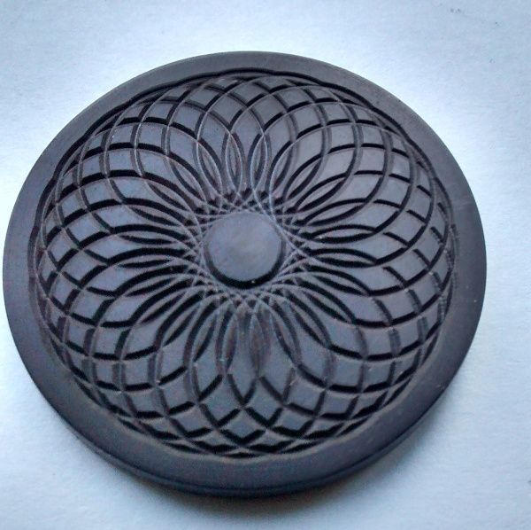

The Eccentric Cutting Frame is a variation of the fly cutter, but the cutter's body is held in a Drill Spindle. The cutter is spinning along the same axis as the Drill Spindle, but eccentrically from it (like the eccentric chuck).
It is used with a fly cutter which should be ground with a wide cutting angle. The typical fly cutter is ground with a 60° angle (see also, Sharpening a Rose Engine Fly Cutter, Round Rod). However, jewelers have shown that the angle needs to be >90° for the cut so that the light is reflected back to the viewer. Otherwise, it simply looks like a set of thick dark lines. 120° is not uncommon.
Just getting started? The eccentric cutting frame is a very nice add-on to the Drill Spindle. Do consider it for one of your first add-on parts.
Examples of work produced with this device

Eccentric Cutting
on the end of a piece
Eccentric Cutting
on the side of a piece (AKA, BarleyCorn)
Image courtesy Bill Ooms
Examples of this device in use
The JaHo Ornamental Turning Device from Drechselbedarf can be used on a traditional lathe to add ornamentation to work. The video below shows one in use with an eccentric cutting frame.
Usage Notes
Spacing of the cuts is something where planning is needed. It is commonly noted that the circles should touch, especially when the cuts are on the edge of a piece, or on a spherical surface. BarleyCorn is the term typically used for this, and Bill Ooms put together a spreadsheet for making the calculations. This and more are available on his web site.
Spacing of the cuts can also be used to give nice artistic effects. When they are close together, the artist can skip the making of a cut every so often (e.g., every 5th one) to give a nice effect. This is called an interrupted pattern, and is most commonly seen when cutting on the end of an object.
Balancing the eccentric cutting frame is very important, and the video to the right shows Jon Spencer's design for that. (Jon Spencer is a great resource for cutting tools.)
More Information
Published Articles
The Eccentric Cutter from James Lukin's Simple Decorative lathe Work, 1905.
OTI Newsletter, Volume 25, No. 1 - Summer, 2018, pg. 8
John Edwards' web site, OrnamentalTurning.co.uk, has really great information about the setup and use of these devices. There is a lot of great information on John's web site, and it is worth reading. Understanding the history behind the devices we use really helps make one far better at understanding and using today's rose engines. And, as I noted elsewhere on this site, the newer designs for devices like a spherical slide still draw much from what was done more than a hundred years ago. And this is why so many books that were written up to 200 years ago are referenced in the section, How to Get More Information.
Other
There is also a hand-operated version of this tool, which is called by some a Pearling Tool.
Disclaimer : eMail comments to me at OTBookOfKnowledge @ Gmail.com. The process of woodturning involves the use of tools, machinery and materials which could cause injury or be a health hazard unless proper precautions are taken, including the wearing of appropriate protective equipment.